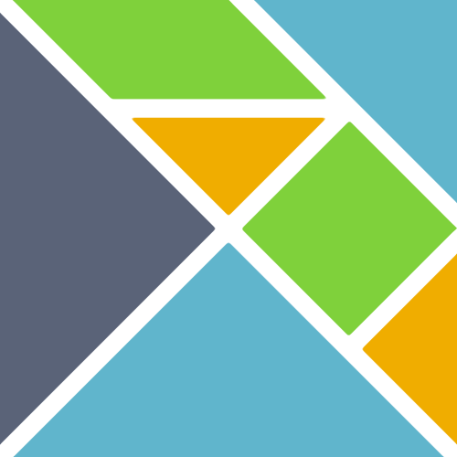
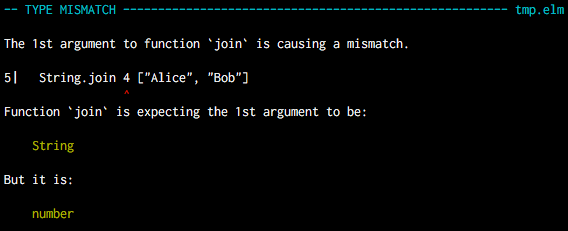

Elm
Funktionale
Frontend-Entwicklung
Webmontag Bremen - 21. November 2016
Dennis Reimann - @dennisreimann
Status Quo
Unterdessen in JavaScript-Land …
Was ist aktuell der heiße Shit?
Warum ist das so?
- Komponenten: Reduktion der Komplexität
- Deklaratives UI: Zustandslose Funktionen
- Lösung für State Management: Flux Pattern
Trend in Richtung
Funktionale Programmierung
- Pure Functions
- Immutability
- Statische Typisierung
new packages monthly
- Purity (native)
- Functional Style Rambda
- Immutability Immutable.js
- Deklaratives UI React
- State Management Redux
- Statische Typisierung Flow / TypeScript
Elm ist …
- eine funktionale Programmiersprache
- für dynamische Web-Interfaces
- statisch typisiert
- JavaScript-basiert
- fokussiert auf Praktikabilität
- Entwickler-freundlich
Compiler
Das Herzstück von Elm
-
Statische Typisierung
- Keine inkonsistente Variablentypen
- Keine unsichere Referenzzugriffe
- Keine Laufzeitfehler
- Zuverlässlichkeit & Wartbarkeit
- Unterstützt Entwickler
Fehlermeldungen

The Elm
Architecture
Die Applikation besteht aus …
- Model: Beinhaltet den Zustand
- View: Funktion, deren Input das Model ist
- Update: Transformiert das Model
Model
type alias Model =
{ title : String
, talks : List Talk
}
type alias Talk =
{ title : String
, speaker : String
, description : Maybe String
, showDetails : Bool
}initialModel : Model
initialModel =
{ title = "Webmontag IV/2016"
, talks = todaysTalks
}
todaysTalks : List Talk
todaysTalks =
[ { title = "Was, wie und warum - Die Gambio Shopsoftware"
, speaker = "Lennard Kläfker und Daniel Wu"
, description = (Just "Die Geschichte unserer Software …")
, showDetails = False
}
, { title = "Elm – Funktionale Frontend-Entwicklung"
, speaker = "Dennis Reimann"
, description = Nothing
, showDetails = False
}
]View
view : Model -> Html Msg
view model =
div [ class "wrapper" ]
[ h1 [ class "title" ] [ text model.title ]
, ul [ class "talks" ] (List.map viewTalk model.talks)
]
viewTalk : Talk -> Html Msg
viewTalk talk =
li
[ onClick (ToggleDetails talk) ]
[ text talk.title
, div
[ hidden (not talk.showDetails) ]
[ text (talk.speaker ++ ": ")
, text (Maybe.withDefault "keine Beschreibung" talk.description)
]
]Update
type Msg
= ToggleDetails Talk
update : Msg -> Model -> Model
update msg model =
case msg of
ToggleDetails talk ->
let
updateTalk t =
if t == talk then
{ t | showDetails = (not talk.showDetails) }
else
t
in
{ model | talks = List.map updateTalk model.talks }
Boilerplate
module Main exposing (..)
import Html exposing (..)
import Html.Events exposing (onClick)
import Html.Attributes exposing (class, hidden)
main : Program Never Model Msg
main =
Html.beginnerProgram
{ model = initialModel
, view = view
, update = update
}
Tooling
elm-package
- Erzwingt Semantic Versioning
- Breaking Changes erfordern Major Version Bump
- Diffs von Versionen anzeigen
elm-format
- Formatiert Code entsprechend Community Standard
- Keine Code Style-Debatten: Überall konsistent
- Developer Experience:
- Man findet sich direkt zurecht
- Übernimmt Fleißarbeit beim Upgrade
elm-css
- Funktionen die zu CSS kompilieren
- Typsicher und vom Compiler gecheckt
- Variablen und Mixins
Debugger
- Export und Import für State und Event-Abläufe
- Wiederholung, um Bugs zu reproduzieren
- Zustand an jeder Stelle einsehbar
- Demo
Elm lernen
Gotchas
- Lernkurve:
- Funktionale Programmierung, neue Paradigmen
- Syntax und statische Typisierung
- Compiler erschwert Prototyping
- Recht junges Ökosystem
- (Noch) kein Server-Side Rendering
- Keine Private Packages
Was mag ich an Elm?
- Es geht nicht um das was die Sprache bietet,
sondern um das, was sie weglässt - Elm Architektur: Einfache und solide Basis
- Developer Experience: Best Practices eingebacken
- Community und Ansatz, siehe Code is the easy part
Warum Elm?
Selbst wenn man Elm nicht praktisch nutzt,
gibt es eine Menge daraus zu lernen!
- "It can't be unseen"
- Elm macht dich zu einem besseren JavaScripter
- Praktischer Einsteg in Funktionale Programmierung
Links
- Elm for Beginners (Videokurs)
- Elm Guide (Praxisnahe Referenz)
- Elm Bridge (Tutorial)
- Elm in Action (Buch)
- How to use Elm at work (Blogpost)
- Elm: Funktionale Frontend-Entwicklung
Danke!
dennisreimann.de/talks/elm.html
@dennisreimann